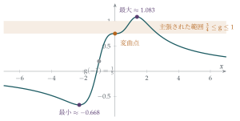

STEP I 1991、第6問
先に進む前に問題を読んでおこう。問題は STEP Support Programme の問題データベースにある： step.maths.org/questions/91-s1-q6
導入
試験問題の多くは、論証を組み立てることを求める。この問題は逆に、二つの論証を示し、それを分解して検討することを求めている。これはまったく別の技能であり、大学で最もよく使う技能でもある。自分の答案を見直すとき、本に書かれた証明を読んでそれを信じてよいか判断するとき、友人の答案を採点するとき、論文を査読するとき、いずれもこの技能が必要になる。
ここに挙げた論証は、学ぶところの多い形で誤っている。どの段階も、これまで何度も見てきたものと同じように見える。計算の誤りを含む段階もあるが、より深刻なのは論理の誤り、すなわち計算が正しくても結論が導かれないという誤りである。こうした誤りこそが専門的な数学の場にまで生き残るものであり、それを見抜くことがこの章の主題である。
取りかかる前に
「各段階を批判せよ」と言われたとき、各段階で何を確かめればよいだろうか。取りかかる前に一覧を作ってみよう。
よいチェックリストには少なくとも三つの問いが含まれる。計算は正しいか。この段階はそれまでの段階から導かれるか。隠れた仮定（関数が連続（continuous）である、極限（limit）が存在する、停留点（stationary point）は極大か極小でなければならない、など）はないか。問題はさらに、結論がそれでも正しい可能性があるかどうかも問うている。誤った論証が正しい結論をもつこともあるので、これは別に確かめる必要がある。
順を追って解く
段階 1 導関数は正しいか
商の微分法（quotient rule）を用いて \(\mathrm{g}\) を微分せよ。\(\mathrm{g}'(x) = 0\) となるのはどこか。\(x = 1\) と \(x = -1\) を直接確かめよ。
商の微分法により、 \[\mathrm{g}'(x) = \frac{6x^2(x^4 + 4) - (2x^3 + 3)\cdot 4x^3}{(x^4 + 4)^2} = \frac{-2x^6 - 12x^3 + 24x^2}{(x^4 + 4)^2} = \frac{-2x^2\bigl(x^4 + 6x - 12\bigr)}{(x^4 + 4)^2}.\] よって \(\mathrm{g}'(x) = 0\) となるのは \(x = 0\) または \(x^4 + 6x - 12 = 0\) のときである。\(x = 1\) では \(x^4 + 6x - 12 = -5\)、\(x = -1\) では \(-17\) である。どちらも停留点ではない。最初の主張は誤りである。
4次式（quartic）\(x^4 + 6x - 12\) は \(x = 0\) で \(-12\) であり、両方向で \(+\infty\) に発散するので、正の根と負の根を（少なくとも）一つずつもつ。第2次導関数（second derivative）\(12x^2\) は非負なのでこの関数は凸（convex）であり、零を横切るのは高々2回である。したがって実数解はちょうど二つである。数値的には \(x \approx 1.386\) と \(x \approx -2.247\) である。
段階 2 値は正しいか
\(\mathrm{g}(0) = \frac34\) は正しく、\(\mathrm{g}(1) = \frac{5}{5} = 1\) も正しい。しかし \(\mathrm{g}(-1) = \frac{-2 + 3}{1 + 4} = \frac15\) であり、\(1\) ではない。論証自身の枠組みの中でさえ計算の誤りがある。\(\mathrm{g}\) を偶関数（even function）と思い込んでいたようである。
段階 3 値を比べればどれが極大かわかるか
ある関数がちょうど二つの停留点をもち、その値が \(\frac34\) と \(1\) であるとする。このとき、前者が極小（local minimum）で後者が極大（local maximum）であるといえるだろうか。
いえない。停留点の種類は局所的な性質であり、その点の近くで関数がどう振る舞うかによって決まる。別の点での値と比べて大きいか小さいかで決まるものではない。極大値が極小値より小さい関数（\(x + 2\sin x\) を考えよ）もあれば、極大でも極小でもない停留点もある。ここでは、\(x = 0\) の近くで因数 \(x^4 + 6x - 12\) は \(-12\) に近いので、 \[\mathrm{g}'(x) = \frac{-2x^2(x^4 + 6x - 12)}{(x^4 + 4)^2} > 0 \qquad\text{十分小さい } x \neq 0.\] 導関数（derivative）は \(0\) の両側で正である。つまり \(x = 0\) は極小ではなく、停留点である変曲点（point of inflection）である。
段階 4 停留値は関数の値の範囲を限るか
停留点が正しく求められていたとしても、\(\mathrm{g}\) のすべての値が最小の停留値と最大の停留値の間にあると結論できないのはなぜか。\(\mathrm{g}(x) < \frac34\) となる \(x\) の値を一つ見つけよ。
停留点は局所的な振る舞いしか表さない。大域的な振る舞いは、定義域の端、ここでは \(x \to \pm\infty\) のときに何が起こるかにも依存する。\(x \to \pm\infty\) のとき \(\mathrm{g}(x) \to 0\) であり、また \(2x^3 + 3 < 0\) すなわち \(x < -\sqrt[3]{3/2} \approx -1.14\) のときは常に \(\mathrm{g}(x) < 0\) であるから、この関数は負の値をとる。たとえば \(\mathrm{g}(-2) = \frac{-13}{20}\) である。したがって結論 \(\frac34 \leq \mathrm{g}(x) \leq 1\) は誤りである（図 3.1.1）。
正しくは次のとおりである。\(\mathrm{g}\) は増加して \(x \approx 1.386\) で約 \(1.083\) の最大値をとり、その後 \(0\) に向かって減少する。左側では、\(0\) から減少して \(x \approx -2.247\) で約 \(-0.668\) の最小値をとり、その後増加して \(x = 0\)（ここで接線が水平な変曲点をもつ）を通り、最大値まで増加する。よってすべての \(x\) について \(-0.668 \lesssim \mathrm{g}(x) \lesssim 1.083\) である。

段階 5 積分
\(-3(1-x)^{-4}\) を微分せよ。\((1-x)^{-3}\) になるだろうか。
\(\dfrac{\mathrm{d}}{\mathrm{d}x}\bigl[-3(1-x)^{-4}\bigr] = -3 \cdot (-4)(1-x)^{-5} \cdot (-1) = -12(1-x)^{-5}\) である。指数も係数も誤っている。正しい原始関数（antiderivative）は \[\int (1-x)^{-3}\,\mathrm{d}x = \tfrac12(1-x)^{-2} + C,\] であり、微分すれば確かめられる。
正しい原始関数を用いると、\(\bigl[\frac12(1-x)^{-2}\bigr]_{-1}^{3} = \frac12 \cdot \frac14 - \frac12 \cdot \frac14 = 0\) となる。結局、答えは正しかったのだろうか。本当にそうだろうか。
正しくない。微分積分学の基本定理（fundamental theorem of calculus）\(\int_a^b F'(x)\,\mathrm{d}x = F(b) - F(a)\) は、被積分関数が区間 \([a, b]\) 全体で連続であることを必要とする。ここで \((1-x)^{-3}\) は \([-1, 3]\) の内部にある \(x = 1\) で定義されず、\(x = 1\) の近くでは非常に大きな値をとる。この積分は広義積分（improper integral）として扱い、問題の点で分割しなければならない。 \[\int_{-1}^{1} (1-x)^{-3}\,\mathrm{d}x = \lim_{\varepsilon \to 0^+} \Bigl[\tfrac12(1-x)^{-2}\Bigr]_{-1}^{1-\varepsilon} = \lim_{\varepsilon \to 0^+} \left( \frac{1}{2\varepsilon^2} - \frac18 \right) = +\infty.\] \(-1\) から \(1\) までの積分は無限大であり（\(1\) から \(3\) までの積分は \(-\infty\) である）、したがって \(\int_{-1}^{3}(1-x)^{-3}\,\mathrm{d}x\) は存在しない。結論「\(= 0\)」が誤りであるのは、真の値が別の値だからではなく、値そのものが存在しないからである。■
振り返り
三種類の誤り。計算の誤り（導関数、\(\mathrm{g}(-1)\)、原始関数）、論理の誤り（値を比べて停留点を分類すること、停留値を大域的な上界・下界とみなすこと）、そして隠れた仮定（微分積分学の基本定理における連続性）。
答えは正しく、理由は誤り。小問 (ii) で原始関数を正しく直すと答え \(0\) が再び得られるが、論証はやはり成り立たない。答えが正しく見えても、推論が健全である証拠にはならない。
局所と大域。導関数からわかるのは、ある点の近くでの振る舞いである。大域的な結論を得るには、定義域の端や関数がおかしな振る舞いをする点で何が起こるかなど、さらに多くのことが必要である。
背後にある数学
まさにこの種の誤りを、解析学の創始者たちも犯していた。1821年の『Cours d’analyse』（解析教程）で、コーシー（Augustin-Louis Cauchy）は連続関数の収束する和は常に連続であると「証明」した。1826年、アーベル（Niels Henrik Abel）は反例を指摘した。フーリエ級数（Fourier series） \[\sin x - \tfrac12\sin 2x + \tfrac13\sin 3x - \cdots\] はすべての \(x\) で収束し、各項は連続であるが、その和は \(x = \pm\pi\) で跳ぶ（\(-\pi < x < \pi\) では \(x/2\) に等しい）。コーシーの論証のどこが誤っていたのかを正確に突き止めるには数十年を要し、その結果として生まれたのが一様収束（uniform convergence）の概念である。これは今ではすべての解析学の学生が学ぶ。隠れた仮定、とりわけ二つの極限の順序を入れ替えることに関わる仮定は、解析学全体で最もよくある誤りの原因である。
仮定をもつ定理
この問題に含まれる誤りのうち二つは、定理の仮定を無視したことから生じている。
最大値・最小値の定理（extreme value theorem）は、有界閉区間 \([a, b]\) 上の連続関数は最大値と最小値をとることを述べている。それを求めるには、区間の端点、停留点、そして関数が微分可能でない点を調べる。\([-1, 1]\) 上の \(|x|\) の最小値は \(0\) でとられるが、これは端点でも停留点でもない。\(\mathrm{f}\) が区間の内部のいたるところで微分可能であれば、内部でとる最大値・最小値は停留点でとられなければならない。実数全体では調べるべき端点がなく、関数が最大値をもたないこともある。その代わりに \(x \to \pm\infty\) での振る舞いを調べなければならない。
微分積分学の基本定理は、被積分関数が \([a, b]\) 上で連続であることを必要とする。連続でない場合、積分はそれでも存在することもあれば（\(\int_0^1 x^{-1/2}\,\mathrm{d}x\) を試してみよ）、存在しないこともあり（ここでのように）、極限を用いて確かめなければならない。
大学で出会う定理には、すべて仮定の正確な一覧がついている。定理を使う前に毎回それを確かめることも、訓練の一部である。
発散する積分の値
小問 (ii) には興味深い補足がある。区間 \([-1, 3]\) は問題の点 \(x = 1\) に関して対称であり、\((1-x)^{-3}\) はその点に関して「奇関数」的である。対称な隙間 \((1 - \varepsilon, 1 + \varepsilon)\) を取り除いて \(\varepsilon \to 0\) とすると、二つの無限大の部分が打ち消し合い、確かに \(0\) が得られる。これをコーシーの主値（Cauchy principal value）といい、物理学や複素解析で実際に役立つものである。しかしそれは意図的に選ばれた別の定義であり、偶然そこにたどり着いた論証は何も証明していない。
思考のスキル
各段階について三つのことを確かめよ。計算は正しいか、その段階は論理的に導かれるか、そして何が言明されないまま仮定されているか。
そのうえで結論を別に確かめよ。誤った論証が正しい結論をもつこともあり、「正しい」答えが成り立たない論証から得られることもある。同じ厳しさで自分の答案も検討せよ。最も信じてしまいやすい論証は、自分自身の論証なのである。
次の一歩
嘘をつく置換。STEP I 1987、第8問 に挑戦せよ。置換積分によって、正の積分が負の積分に等しいことが示されるように見える。論証がどこで破綻するかを正確に突き止め、そのうえで両方の積分を正しく計算せよ。
真か偽か。STEP I 1998、第3問 に挑戦せよ。証明するか反証するかを求める四つの主張がある。それぞれについて、書き始める前にどちらになると予想するかを決めておこう。
すべての馬は同じ色である。帰納法（induction）によるこの「証明」の誤りを見つけよ。任意の1頭の馬はそれ自身と同じ色である。\(n + 1\) 頭の馬が与えられたとき、帰納法の仮定により最初の \(n\) 頭は同じ色であり、最後の \(n\) 頭も同じ色である。二つの群は重なり合っているので、\(n + 1\) 頭すべてが同じ色である。
存在する積分。被積分関数が \(0\) で定義されていないにもかかわらず \(\int_{-1}^{1} |x|^{-1/2}\,\mathrm{d}x\) が存在することを示し、その値を求めよ。
さらに学ぶために
E. A. Maxwell, Fallacies in Mathematics（Cambridge University Press）。もっともらしく見える誤った論証を分野別にまとめた古典的な本で、シックスフォーム（sixth form、英国の大学進学準備課程）の生徒向けに書かれている。
Bernard Gelbaum & John Olmsted, Counterexamples in Analysis（Dover）。定理の仮定がなぜ重要なのかを示す数百の例を収めている。解析学の講義を受け始めたら、ところどころ拾い読みするとよい。
Imre Lakatos, Proofs and Refutations（Cambridge University Press）。数学者が証明の誤りをどのように見つけ、修正するのかを描いた見事な対話篇。